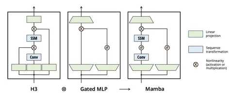

Mamba — это LLM, которая основана на SSM (State Space Models). О ней рассказывается в статье, которую мы сегодня и разберем.
Для начала напомним, что такое SSM. Это модели, которые позволяют эффективно работать с длинными последовательностями данных. Что-то вроде RNN, но без нелинейности, благодаря чему запись можно осуществлять в виде одной большой матричной операции.
Mamba сочетает в себе преимущества SSM и Gated MLP. Вот, как это работает. Сначала к последовательности применяется in projection, увеличивается количество каналов. Затем используется 1D-конволюция и нелинейность. После этого, как в Gated MLP, происходит поэлементное умножение параллельного входа и выходной projection. Таких блоков может быть несколько.
Какие преимущества даёт такой подход
• Mamba использует recomputation во время backward pass, что позволяет эффективно утилизировать памяти. Это соответствует таким подходам, как Flash Attention, которые разработаны для оптимизации памяти.
• На длинных последовательностях Mamba превосходит Transformer++, особенно при увеличении числа FLOPS и размера модели. При этом на коротких последовательностях результаты сравнимы с Transformer++.
• Модель может работать с контекстом до одного миллиона токенов, что демонстрирует её способность обрабатывать очень длинные последовательности.
• Mamba показывает превосходные результаты на различных бенчмарках, таких как LAMBADA и PIQA, даже при сравнении с моделями в два раза больше.
• В экспериментах Mamba демонстрирует высокую эффективность на задачах копирования текста.
На этом всё. Рассказываете, что вы думаете о Mamba в комментариях!
Разбор подготовил
Душный NLP
